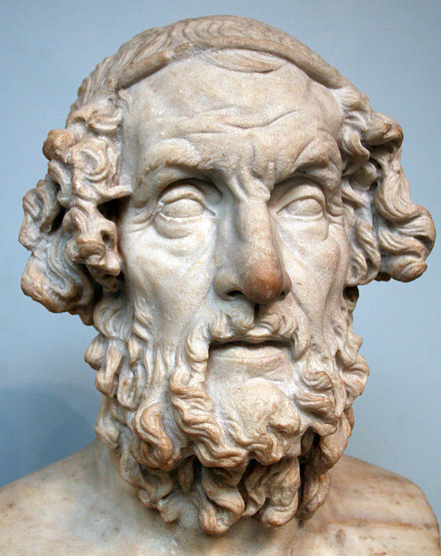

The Homeric Poems First of All
There is little doubt: it is not from Thales but from Homer that we must start. The stories sung by the rhapsodes tell us of the phase in which valid singers became convinced that it was worth investing in those narratives without holding back, to the point of giving them a rather precise identity, with people who did not fail to express a vast appreciation for those ways of entertaining the public. All this when there were still no Hellenic people. The Hellenes became a people as a not insignificant nucleus of singers began to pleasantly entertain this public with their stories, as those stories turned out to be attractive and became well-known and recognisable, while the dissemination of the Greek colonies in much of the Mediterranean area went about hand in hand with the spread of songs associated with the name of Homer.

All this should have occurred, to a very significant extent – or, at least, it certainly began – decades before 700 BC, at a time when it does not appear that the Greek cultural offer included other comparable ingredients.
Of course, Delphi and Olympia established themselves at the time, but it does not appear that the sanctuary and the Pythia, or the Panhellenic games, became the subject of songs even if, in principle, this would have been possible. It is as if the word had resounded only through the crowd of hexameters with which dozens and dozens of ‘Homeric’ singers dedicated themselves to entertaining ‘the square’ in the most far-flung locations.
Judging by the available clues, the initial public consensus (before 700 BC) was renewed for generations, to such an extent that the sung narratives of the Homeric cycle were so widespread that they became an identity trait of the Hellenes, while the reference to ‘Homer’, although necessarily vague, ended up becoming a guarantee of recognition at many levels, including a large number of epithets and some recurring verses (in the case of the so-called formular language). In fact, we have solid clues to think that in very early times a vast dissemination of rhapsodes and chants took off, hence the affirmation of ‘Homer’, among many (or, perhaps, among the generality) of the urban towns where Greek was spoken, therefore not only along the whole northern side of the Mediterranean but also along substantial portions of its southern side.
This way, a society as such (not only the poets of the seventh and subsequent century) ‘forgot’ the more or less grim tales of previous eras (e.g. those concerning Tantalus), ‘recognized’ the existence of the gods of Olympus, and set about building temples while becoming familiar with a shared language. A phenomenon of uncommon magnitude therefore occurred, and to understand what happened is so important that, if the sense of such a unique and so peculiar macro-event escaped us, essential ingredients for the understanding of constitutive elements of Greece would be lacking.
Fortunately for us, more than one key hint is still at hand.

Bust of Homer in the British Museum, London. Roman copy of a lost Hellenistic original of the 2nd c. BC.
The Homeric poems: an immense gift
Only the combination of geographic spread and attractiveness that those stories were able to exert, allows us to understand why the Greek of the rhapsodes, a very characteristic Greek, gradually became a language that was basically understandable everywhere in the diaspora, so much so that it became an element of identity, therefore a resource thanks to which many could feel themselves Hellenes, learn to appreciate (possibly exhibit) their belonging, and even contain the diversification of dialects.
That this happened is not strange. To begin with, these stories were anything but incomprehensible. We still notice how remarkable the intelligibility rate is, especially in the case of two of the main ingredients: situations and speeches. Many situations are well suitable to be imagined, and speeches abound; in turn the speeches, while evoking complicated situations (e.g. what Achilles had to say when Agamemnon demanded his female slave, and how his words would have been received, on the one hand by Agamemnon and on the other by the crowd of sovereigns gathered in council), have the gift of being understandable in the eyes of all, not unike the emotions that are displayed in them.
This flow of discourses-in-situation, reflections, fears and hopes, decisions and encounters, was able to strike and feed the imagination of many everywhere, precisely because of its easy intelligibility. Besides, even the motivation to say what each one said was intelligible, and every listener was able to put himself in the shoes of the speakers. And since we are talking about an era in which even the ‘Greek’ (alphabetic) writing was in its infancy, we are sure that the songs were listened to with the firm desire to learn much more than a few songs. For people surely tried to hum and sing them by themselves, because it was still normal not to rely on writing. Indeed, the commitment to memorize, if it has not been for everyone, must surely have belonged to many. So it is conceivable that in the breaks from daily work it often happened that someone sang one of those songs, and bystanders contributed to sing them together as best they could.
Also noteworthy is the quality of the conversations, which exhibit good taste, tact, discretion, sense of proportion even in moments of tension; while abandoning oneself to unbridled or abject conduct is never represented: if I remember correctly, it never happens that self-control fails. This is not a secondary detail, since the Homeric poems told ‘beautiful’ stories: the Greeks of Homer were the strongest and won their “great war”, the unsurpassable Achilles was Greek, the very astute Odysseus was Greek, the most beautiful woman in the world (Helen) was Greek; Greeks, in their own way, were also gods and goddesses. Greek were also a number of customs, i.e. the use of common meals enlivened by a singer.
But then there were the epithets that so often accompanied the presentation of gods and heroes: in the poems it was normal to speak of the lord or shepherd of peoples (Agamemnon), of the swift footer Achilles, of the Achaeans with flowing hair, of Ilium with many foals, of Hector with a waving helmet, of Odysseus the man of innumerable resources, of Zeus the gatherer of clouds, of Aphrodite with a beautiful crown, of Hera with white arms, of Athena with blue eyes, up to the Dawn with rosy fingers. It does not take much imagination to understand that this recurring evocation of the fascination of that imaginary world conveyed a certain satisfaction for the audience to whom these stories were sung, and they could boast of their belonging to the Hellenic ethnic group and not to any other!
This circumstance, it should be noted, probably contributed to thrill the female population as well, and perhaps in particular the female population (this would have been a guarantee of rootedness). We have a more than convincing clue of this in the first book of the Odyssey when we learn of what Penelope would have said when addressing the singer she had heard singing while she was still in her rooms:
‘Phemios, since you know many other actions of mortals
and gods, which can charm men’s heart and which the singers celebrate,
sit beside them and sing one of these, and let them in silence
do on drinking their wine, but leave off singing this sad
song, which always afflicts the dear heart deep inside me,
so dear a head do I long for whenever I am reminded
of my husband, whose fame goes wide through Hellas and midmost Argos.’ (Od. I 337-342, transl. R. Lattimore)
These verses document in the best possible way the existence, among the rhapsodes, of a conscious (and consolidated) attention to female sensitivity.
Now, however, let’s shift our attention for a moment to another famous epic poem, the Nibelungs. This poem has the defect of not pleasing women even though a couple of beautiful women and a splendid man full of energy (etc.) were among the protagonists of the tale. But there is too much blood there, and the gloomy Hagen, who never smiles and has no private life, but sees only enemies to overcome, is omnipresent; moreover, the story is resolved with the bloody death of all its protagonists in a repellent final carnage.
There is an abyss between a story that ends so badly and the beautiful world, sometimes even festive and gentle, which the Homeric poems have imprinted in the collective imagination of generations of Greeks, and then again in that of many others cultures (our own included).
Besides, these ancient professional singers also paid great attention to female figures, especially in the Odyssey. The delicacy that permeates the story of Nausicaa (Od. VI) seems to be particularly representative. In this case the poet points out and appreciates with a happy hand the resources of people who are profoundly different from male warriors: women, and helps us understand them. At the same time, he outlines the relationships between genders (father-daughter, Nausicaa-Odysseus) in ways that are not only creative, but also beautiful and suggesting a model of conduct (“it will be worth remembering this in the appropriate circumstances!”).
Among the things that it is surprising to find in such an ancient poem, there is the gentle reticence with which the girl does not mention to her father Alcinoous her wedding expectations, and does not tell Odysseus that her father is the ruler of the island. Only with the maids Nausicaa dares to express the idea that she caresses more willingly: “Oh, if such a man could be my husband!” To Odysseus, on the other hand, she is careful to say: “Now get off the chariot, I would not want people to rush to recognize my future husband in a handsome and big man like you”. The task – and the pleasure – of grasping the allusions and then imagining the situation in every detail, is evidently left to the public, with the clear intention to reward the most attentive and less superficial members of the audience. It can be deduced that these songs probably had some following also in the gynaecium, between women as well as among couples.
And there are the gods of Olympus, whom ‘Homer’ was able to make so visible, fearful but not too much, and substantially beneficial. The Homeric poems were in charge of ‘building’ the Greek pantheon and setting up the system of human-gods relations, and it must have taken only a few decades for these beliefs to begin to take root in sacred places, religious ceremonies and figurative representations (not only statues), beginning to stabilize the entity known as “Greek religion”.
In acclimating the public to a relatively stable idea of divinity, it also happened that many gods turned out to be representative of feelings and emotions, resources and factors of fragility recurring in everyone’s life.
Aphrodite, for example, evoked (and still evokes) the beauty and attraction of the female, Ares male beauty and aggression, Dionysus letting oneself go and frolicking, Ate blindness and serious insanity, Athena intelligence, and so on. With these objectifications, the stories of the epic cycle have endowed an increasing number of Greeks with specific and varied images, names, words and behavioural patterns with which to learn about, among other things, attitudes and behaviours, as well as feelings and emotions. Finding them personified by specific gods, it will have been easier to pay attention to specific emotions and recognize them, represent them and name them (giving them different and, on the average, recognizable names) and finally talk about them, reflecting on this or that kind of feeling.
In fact, those who had listened to the songs of the bards several times, and already had an idea of the Olympus, found many types of conduct and many emotions embedded in the horizon of Olympic mythology, therefore identified and made understandable by shared images, stories and words. This way they acquired resources to become familiar with both an increasingly diversified number of behaviours, and with one’s own and others' feelings, including the peculiar dynamics of different types of conduct, as well as emotional states.

Livio Rossetti: Thales the Measurer. Issues in Ancient Philosophy. Thales the Measurer offers a comprehensive and iconoclastic account of Thales of Miletus, considering the full extent of our evidence to build a new picture of his intellectual interests and activity.
Amazon affiliate link. If you buy through this link, Daily Philosophy will get a small commission at no cost to you. Thanks!
In turn, knowing how to give a name and a meaning to all this, must have had a formidable civilizing power. In fact, not only did it allow to circumscribe the sphere of fears as well as the sphere of hopes (and this is already a great deal), but it also gave the opportunity to talk about emotions, perhaps starting by recognizing, behind an unusual conduct, the influence of divinity X, something which happens a thousand times in Homer, where the influence of specific divinities materializes by visualizing their presence alongside the hero, who has the opportunity to speak several times with the divinity or with her temporary substitute. This meant that one even got ideas about what to do, if necessary, to act on a given form of malaise. We are therefore talking about a resource of the highest order, and long-term, a resource available just short of forever and for everyone, men and women of any condition.
As for the modulation of the power relationships, I observe that the Homeric gods knew how to instil only very limited fears and cause sufferings that, often, other divinities could take care to alleviate. They do not generate severe awe; on the contrary they allow one to even smile at some of their behaviours. Ultimately, the gods constitute a resource much more than a threat, and it is no coincidence that they require very little (just the libations). And if the society of the gods does not provide for very rigid hierarchies (far from it!), much less the society of men does not provide for very rigid hierarchies. In fact, although the notion of youth protest established only around 1968, Achilles already knows how to be a young protester, Agamemnon lends his side to understandable criticisms, and Odysseus happens to have to worry about the swaggering talk of a simple soldier, Thersites; among the Phaeacians Odysseus happens to discover that that was a society ‘ruled’ by an uncommon moderation, where there was someone who even asked him for forgiveness and wanted to reconcile with him; in Ithaca, then, there are faithful but also unfaithful servants, as well as an old dog who, unlike the people finding themselves on the site, is able to recognize his former master.
Consequently, to those who tried to look at the present with the eyes of the poet, a rather strong message arrived: in real life, a bit like in the events of the two poems, the social hierarchies do exist, but they are not – and it is good that they are not – very rigid, and much depends on the wisdom, respect, good taste and inventiveness with which problems and difficulties are faced. On the other hand, we know that not everywhere such a moderately threatening (and therefore such a basically optimistic) model had established itself. In fact, the threatening model educates to subjection, while such a flexible model (in which, it should be noted, the place reserved for torture is reduced to a minimum, for the time) ends up proposing precise alternatives to subjection, hence the possibility of escaping it (again: Achilles who does not submit to Agamemnon, Thersites who dares to improvise orator and leader under the walls of Troy). Such glimmers of civil coexistence – and of freedom! – become especially significant if we compare the Homeric society taken as a whole (not necessarily the Phaeacian society portrayed in the Odyssey) with that, much less promising, of the Nibelungs (above).
We therefore understand this too, that whoever was able to compose the song of Nausicaa (and others) must have lived in a society that already was not too rough, not too violent, not too macho. Therefore, it is not surprising that he in turn represented a humanity and an Olympus that were not prey to particularly rigid social relations. On the other hand, it is well known that traditional obligations, typical of the motherland, tend to diminish in those who go to live elsewhere, as innumerable Greeks did.
Another characteristic, in my opinion qualifying, is to be recognized in the way in which the epic poets (or, if you prefer, Homer) have made of their songs the vehicle of multiple information, teachings and semi-prescriptions (not only on the Olympic and religious rites, but also in matters of agriculture and crafts, geography and other areas), to the point of delineating even a seed of etiquette, so much so that the two poems famously became, over time, also a primary resource for teaching.
The salient feature concerns the way in which information and teachings were transmitted: without the poet ascribing to himself an alleged authority. ‘Homer’ is not a teacher, nor provides explanations (not even on the Olympic pantheon!), nor formulates explicit rules and prohibitions, nor portrays the punishment for those who were not behaving in the ways indicated, let alone hastened to invoke divine wrath, let alone posed as people who know and turn to people who do not know. ‘Homer’ did something of the sort by just entertaining, outlining positive models, conveying optimism (“You understand well that, if you want, you can too”) and, in the meantime, strictly remaining behind the scenes, so as not to even say something like “Here, you see? This is how one should behave”.
In short, when there was a teaching, it remained at a subliminal level, in the form of an appeal to the intelligence and good taste of the audience, and this applies above all to the more than elaborate art of verbal communication. With this the poet recognized – or even instituted – the autonomy of judgment of those whom he was addressing, and all this becomes, as is evident, a powerful message of civilization, a message in which it makes sense to recognize one of Homer’s most important (and beautiful) prerogatives, and in any case a constitutive ingredient of the legacy that the ancient Greek epic left to posterity.
In fact, the civilizing function performed by the two most representative poems and by the itinerant rhapsodes who sang them countless times (not without feeling themselves free to rephrase differently one or more verses from time to time), can not be overestimated. That form of entertainment ended up shaping the spirit of the Greeks (not just their self-image) and giving it a lasting configuration. And it is imperative to immediately take into consideration this component of ‘Greekness’ because every other modulation and every subsequent innovation found itself carving out a space starting from this seed – which is also made, it goes without saying, of many other qualifying traits who do not deny it, and, above all, do not ignore such a seed.
Well, if things went roughly this way, as I dare to assume, didn’t the Greeks receive a fantastic gift from ‘Homer’? By comparison, the gift that the Romans received from Vergil and we the Italians received from Dante has been, no doubt, much less epochal.
◊ ◊ ◊

Livio Rossetti has been professor of ancient philosophy at the University of Perugia (Italy) for decades, until his retirement. He currently lives in Perugia.
He is more or less known as the founder of (a) the International Plato Society in 1989, (b) the Eleatica conferences in 2004, (c) the Socratica conferences in 2005, (d) the semi-annual Amica Sofia magazine in 2007, and (e) the Italian association for philosophy with children Amica Sofia in 2008.
His latest book is Thales the Measurer (Abingdon-New York 2022: Routledge).
Livio Rossetti on Daily Philosophy:
Cover image: Bust of Homer in the British Museum, London. Roman copy of a lost Hellenistic original of the 2nd c. BC. From: Wikipedia.